Nuestra Historia
EMPIEZA AQUÍ
Tu navegador no soporta video HTML5.
“Desde el primer día...”
Tu navegador no soporta video HTML5.
“Hasta el último...”
Gracias por cada momento
Ojalá que este rincón de recuerdos perdure en el tiempo.
Pd. Te quiero
Nuestros Recuerdos
Gran Canaria - 2022
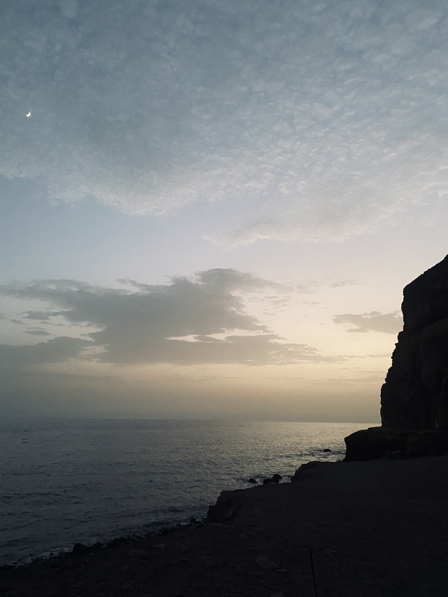
Tenerife - 2023
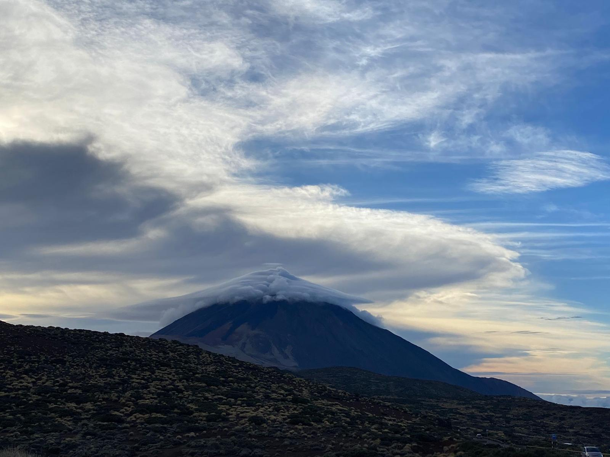
Londres - 2023
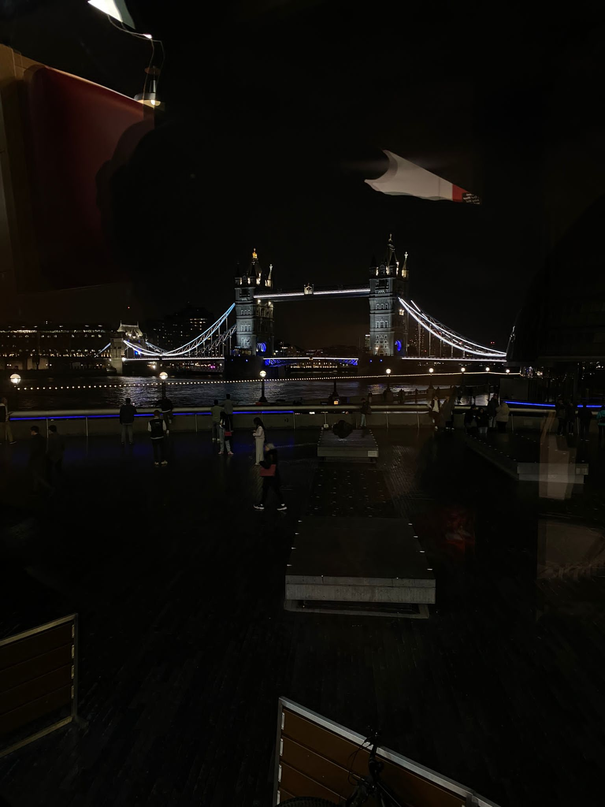
Cádiz - 2023
Lanzarote - 2024
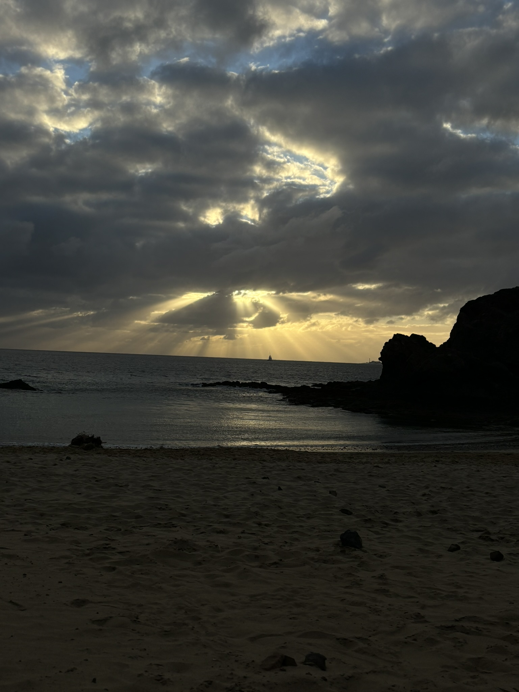
Ibiza - 2024
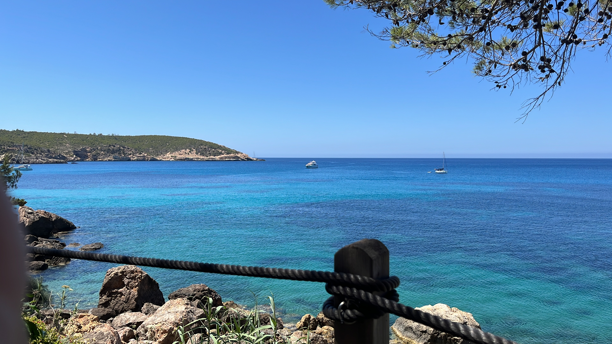
Asturias - 2024
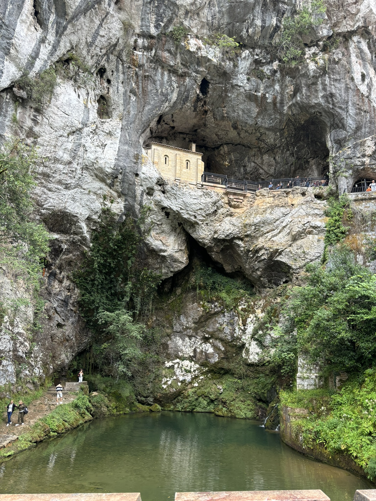
Viena - 2024
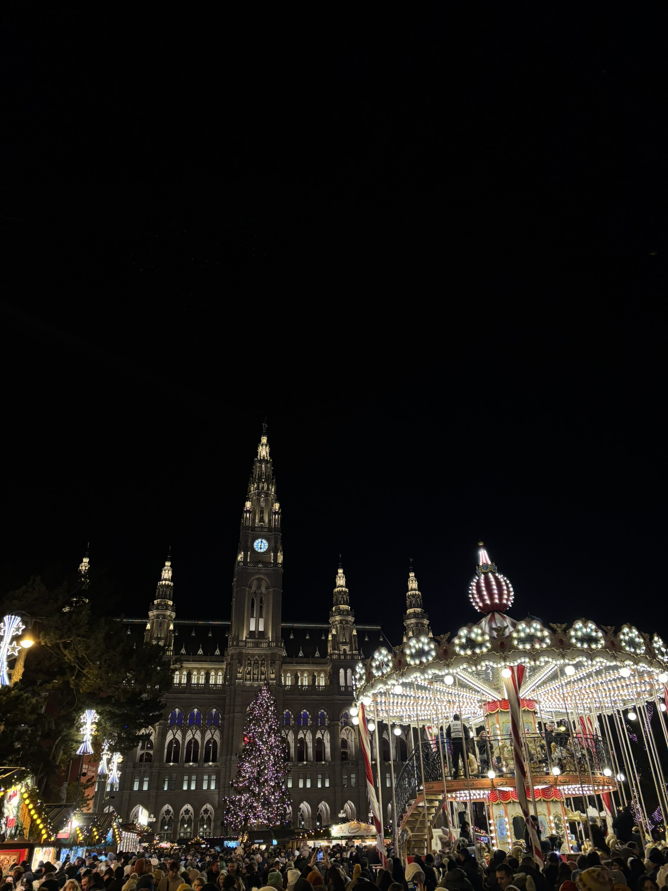
Gran Canaria – 2022
× Cerrar álbum
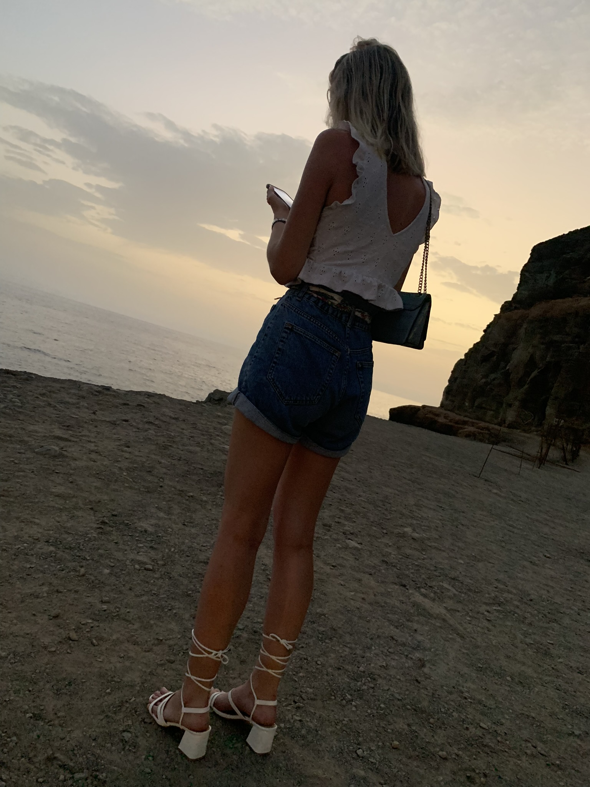 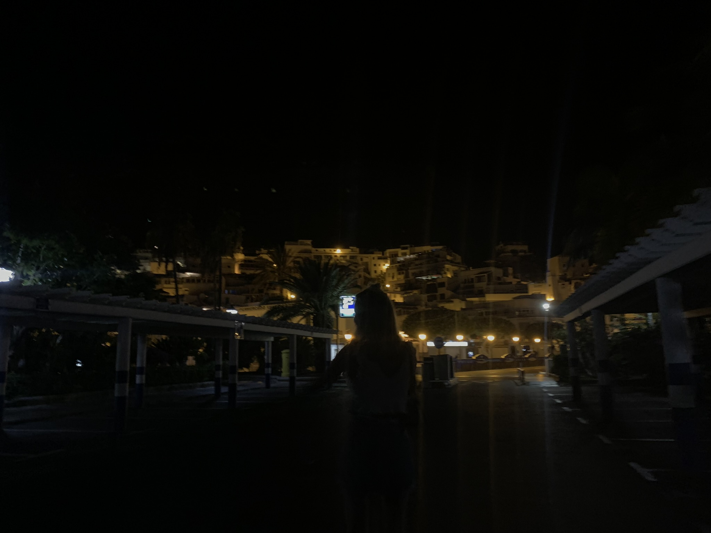 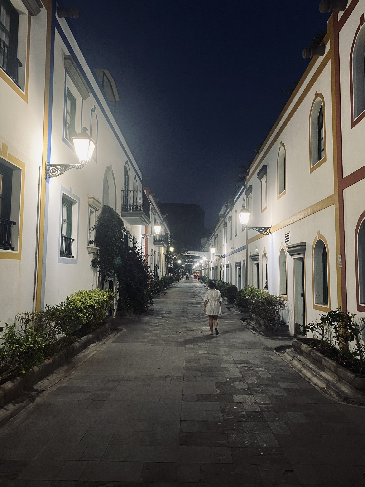 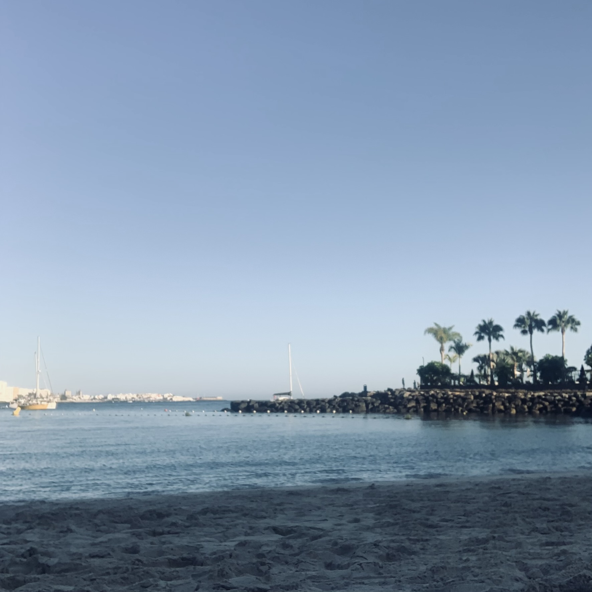 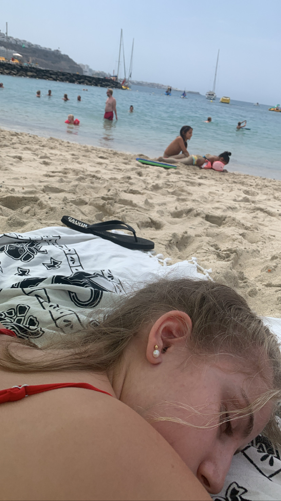
Tu navegador no soporta video HTML5.
Tenerife – 2023
× Cerrar álbum
Tu navegador no soporta video HTML5.
Londres – 2023
× Cerrar álbum
Cádiz – 2023
× Cerrar álbum
Lanzarote – 2024
× Cerrar álbum
Ibiza – 2024
× Cerrar álbum
Asturias – 2024
× Cerrar álbum
Viena – 2024
× Cerrar álbum